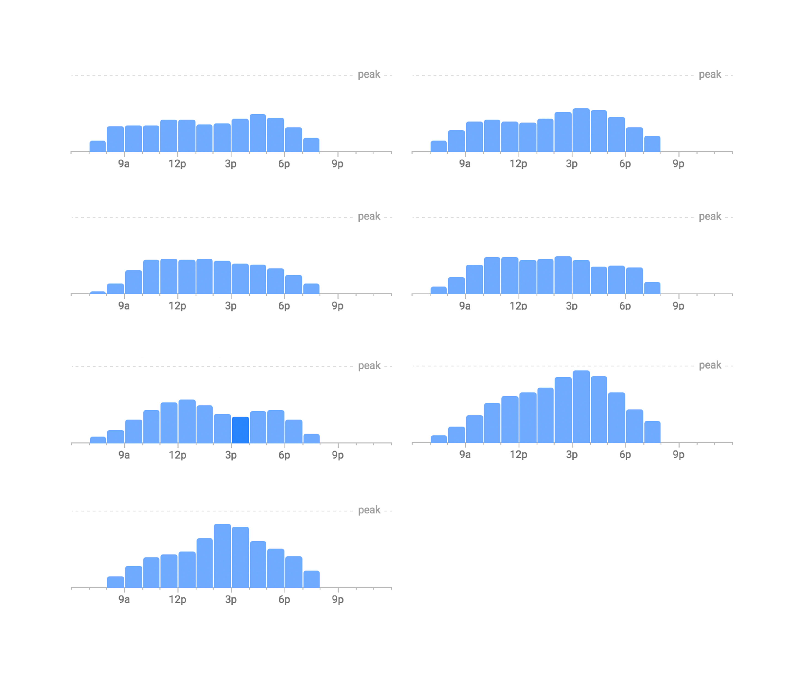
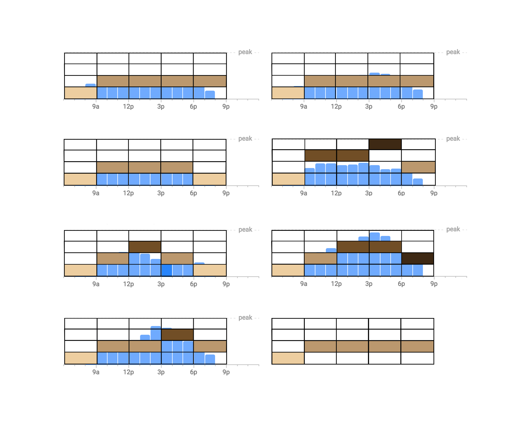
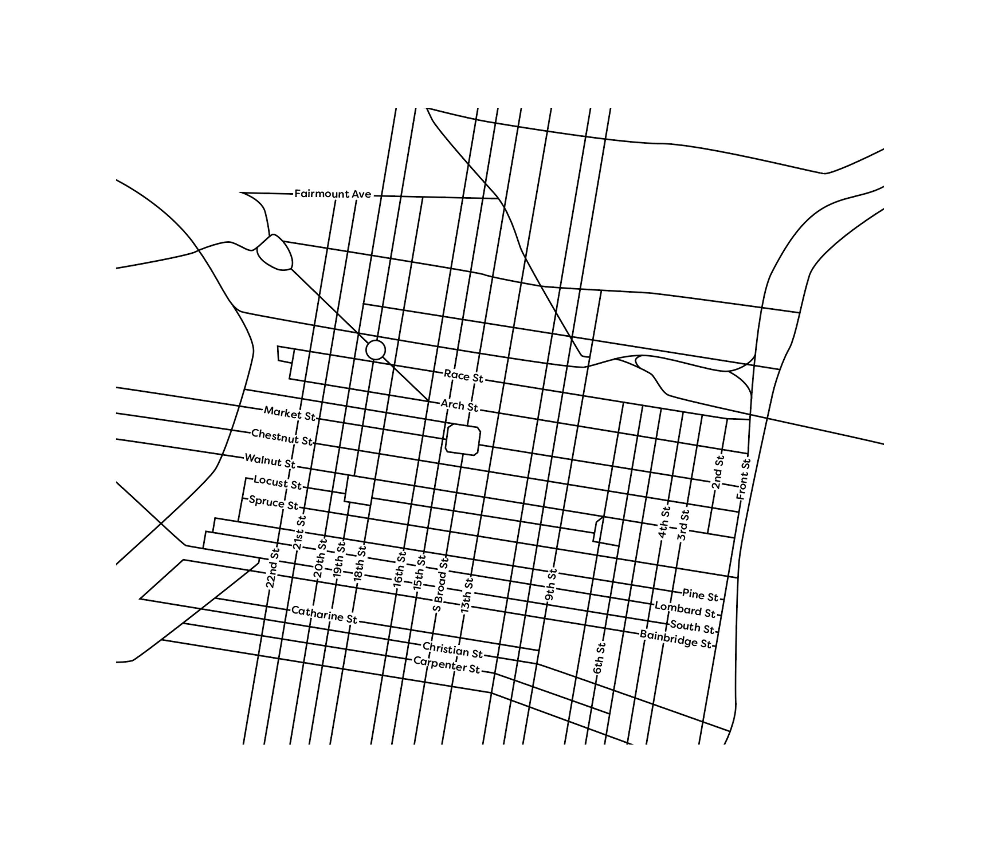

Popular Coffee Times
Overview
Our professor tasked us with creating a map that visualizes any type of data. So, naturally, as an avid coffee-drinker, I decided to visualize the busyness of coffee shops in downtown Philadelphia, PA throughout the week.
Tools
Google Maps, Google Popular Times, Adobe Illustrator
Colors
The colors were inspired by the different types of coffee – espresso, latte, americano, iced coffee. The base color of the map was chosen to reflect the blue-gray skyline of Philadelphia.
Typeface
I chose to use Filson Soft for all text on the map because it created a friendly and inviting mood while being legible.
Elixr Coffee Roasters Data
All data was taken from Google's Popular Times feature. The graphs below represent a week of popular times, Monday – Sunday for Elixr Coffee Roasters (my absolute favorite, check out the Guatemala Nueva Esperanza pour-over if you have the chance!).

Elixr Data Abstraction
After collecting all the data, I abstracted it to different levels of popularity - a darker value means there are more people at that coffee shop. The graphs are split into 5 different time periods in a day. I then averaged the colors to create the final graph.

Downtown Philadelphia Base Map
The base map was traced from Google Maps and manipulated for simplification. Only the streets with coffee shops are named.

Final Maps
The 5 maps represent the 5 different time periods in the day. Each map takes its designated color block from each coffee shop's final graph. This is definitely not an exhaustive list of coffee shops, but I hope to one day make an interactive web app so we never have to wonder if there is a seat open at a coffee shop.